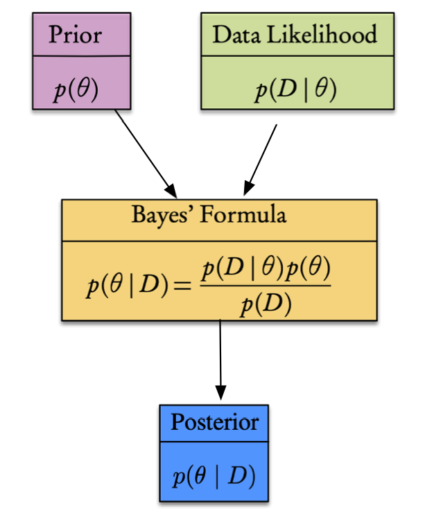
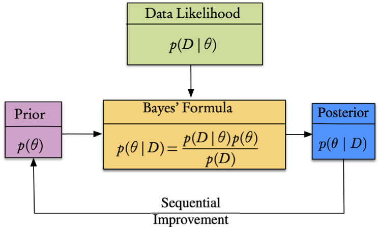

Statistical Inverse Problems
Bayesian Inference
2024-01-31
Motivation
So, far we dealt with deterministic problems
produce single answer
assume there was no noise
no uncertainties in forward model
Reality is different
need to handle uncertainty
Bayesian inference provides a framework for principled handling of uncertainty
produces estimate for the posterior distribution—i.e, offers complete statistical description of all parameter values that are consistent with the data.
Uncertainty Quantification
Definition 11.1 (UQ). UQ is the composite task of assessing uncertainty in the computational estimate of a given quantity of interest (QoI).
Definition 11.2 (QoI). In an uncertainty quantification problem, we seek statistical information about a chosen output of interest. This statistic is know as the quantity of interest (QoI) and is usually defined by a high-dimensional integral. The QoI accounts for uncertainty in the model or process.
We can decompose UQ into a number of subtasks:
- Quantify uncertainties in model inputs by specifying probability distributions.
- Propagate input uncertainties through the model and quantify effects on the QoI.
- Quantify variability in the true physical QoI
- Aggregate uncertainties arising from different sources to appraise overall uncertainty (input, model, numerical errors, inherent variability)
- Compute sensitivities of output variables with respect to input variables (forward UQ)
Account for uncertainty
- Solve the deterministic model, with random perturbations of parameters/initial conditions/forcing;
- Formulate and solve an inverse problem to seek the model parameters that minimize the difference between measurements and simulated observations. This can be achieved by variational and by statistical approaches;
- Starting from some prior knowledge (probabilities), use Bayesian analysis to compute a posterior distribution;
For UQ, we seek not just point estimates of the optimal, best-fit parameters but a complete statistical description of all parameter values that are consistent with the data;
The Bayesian approach does this by
- reformulating the inverse problem as a problem in statistical inference,
- incorporating uncertainties in the measurements, the forward model, and any prior information about the parameters.
The solution of this inverse problem is the set of so-called posterior probability densities of the parameters, describing updated uncertainty in the model parameters.
Resulting uncertainty in the model parameters can be quantified, taking into account uncertainties
- in the data
- in the model,
- and prior information.
A major challenge is uncertainty quantification for the large-scale design and inverse problems that underlie digital twins.
In fact Bayes’ Law provides not only the solution to an inverse problem,
- but also a complete quantification of the solution’s uncertainty.
- however, this can have a high computational cost because it most often relies on some kind of Monte Carlo simulation.
Bayesian approach
Bayesian analysis provides approach for models to learn from data
- Capture our prior knowledge about a model.
- Rigorously assess the plausibility of candidate model classes based on system data.
- Finally, we can make robust probabilistic predictions that incorporate all uncertainties, allowing for better decision making and design.
Relevant for system identification, or parameter estimation, where the inverse problems are often ill-posed and many candidate models exist to describe the behavior of a system.
- Estimation of uncertain parameters.
- Prediction of future events.
- Tests of hypotheses.
- Decision making.
Bayesian Inference
In the most general case, where we want to perform Bayesian inference for the estimation of parameters (an inverse problem!), we simply replace the probabilities by the corresponding density functions.
Then Bayesian inference is performed in three steps:
Choose a probability density \(f(\theta),\) called the prior distribution, that expresses our beliefs, or prior experimental or historical knowledge, about a parameter \(\theta\) before we see any data.
Choose a statistical model \(f(x\mid\theta)\) that reflects our beliefs about \(x\) given \(\theta.\) Notice that this is expressed as a conditional probability, called the likelihood function, and not as a joint probability function.
After observing data \(x_{1},\ldots,x_{n},\) update our beliefs and calculate the posterior distribution \(f(\theta\mid x_{1},\ldots,x_{n}).\)
Let us look more closely at the three components of Bayes’ Law.
Definition 1 Prior Distribution. For a given statistical model that depends on a parameter \(\theta,\) considered as random, the distribution assigned to \(\theta\) before observing the other random variables of interest is called the prior distribution. This is just the marginal distribution of the parameter.
Definition 2 Posterior Distribution. For a statistical inference problem, with parameter \(\theta\) and random sample \(X_{1},\ldots,X_{n},\) the conditional distribution of \(\theta\) given \(X_{1}=x_{1},\) \(\ldots,\) \(X_{n}=x_{n}\) is called the posterior distribution of \(\theta.\)
Definition 3 Likelihood Function. Suppose that \(X_{1},X_{2},\ldots,X_{n}\) have a joint density \[f(X_{1},X_{2},\ldots,X_{n}\mid\theta).\] Given observations \(X_{1}=x_{1},\) \(X_{2}=x_{2},\) \(\ldots,\) \(X_{n}=x_{n},\) the likelihood function of \(\theta\) is \[L(\theta)=L(\theta\mid x_{1},x_{2},\ldots,x_{n})=f(x_{1},x_{2},\ldots,x_{n}\mid\theta).\]
If the \(X_{i}\) are i.i.d. with density \(f(X_{i}\mid\theta),\) then the joint density is a product and \[L(\theta\mid x_{1},x_{2},\ldots,x_{n})=\prod_{i=1}^{n}f(x_{i}\mid\theta).\]
We point out the following properties of the likelihood:
The likelihood is not a probability density function and can take values outside the interval \([0,1].\)
Likelihood is an important concept in both frequentist and Bayesian statistics.
Likelihood is a measure of the extent to which a sample provides support for particular values of a parameter in a parametric model. This will be very important when we will deal with parameter estimation, and inverse problems in general.
The likelihood measures the support (evidence) provided by the data for each possible value of the parameter. This means that if we compute the likelihood function at two points, \(\theta=\theta_{1},\) \(\theta=\theta_{2},\) and find that \(L(\theta_{1}\mid x)>L(\theta_{2}\mid x)\), then the sample observed is more likely to have occurred if \(\theta=\theta_{1}.\) We say that \(\theta_{1}\) is a more plausible value for \(\theta\) than \(\theta_{2}.\)
For i.i.d. random variables, the log-likelihood is usually used, since it reduces the product to a sum.
We now formulate the general version of Bayes’ Theorem.
Suppose that \(n\) random variables, \(X_{1},\ldots,X_{n},\) form a random sample from a distribution with density, or probability function in the case of a discrete distribution, \(f(x\mid\theta).\) Suppose also that the unknown parameter, \(\theta,\) has a prior pdf \(f(\theta).\) Then the posterior pdf of \(\theta\) is \[f(\theta\mid x)=\frac{f(x_{1}\mid\theta)\cdots f(x_{n}\mid\theta)f(\theta)}{f_{n}(x)},\label{eq:bayes}\] where \(f_{n}(x)\) is the marginal joint pdf of \(X_{1},\ldots,X_{n}.\)
In this theorem,
the prior, \(f(\theta),\) represents the credibility of, or belief in the values of the parameters we seek, without any consideration of the data/observations;
the posterior, \(f(\theta\mid x),\) is the credibility of the parameters with the data taken into account;
\(f(x\mid\theta),\) considered as a function of \(\theta\), is the likelihood function, which is the probability that the data/observation could be generated by the model with a given value of the parameter;
the denominator, called the evidence, \(f_{n}(x),\) is the total probability of the data taken over all the possible parameter values, also called the marginal likelihood, or the marginal, and can be considered as a normalization factor;
the posterior distribution is thus proportional to the product of the likelihood and the prior distribution, or, in applied terms, \[f(\mathrm{parameter}\mid\mathrm{data})\propto f(\mathrm{data}\mid\mathrm{parameter})\,f(\mathrm{parameter}).\]
What can one do with the posterior distribution thus obtained? The answer is a lot of things, in fact a complete quantification of the incertitude of the parameter’s estimation is possible. We can compute:
- Point estimates by summarizing the center of the posterior. Typically, these are the posterior mean or the posterior mode.
Interval estimates for a given level \(\alpha\).
Estimates of the probability of an event, such as \(\mathrm{P}(a<\theta<b)\) or \(P(\theta>b).\)
Posterior quantiles.
Note
Bayesian Inference is a general framework that plays a crucial rule in solving inverse and data-assimilation problems. It also plays a major role in uncertainty quantification. These will be discussed
- when we introduce Bayesian filtering
- extensions of Kalman filtering
- simulation-based inference that leverages the ability of deep neural networks to capture the posterior from simulations
Bayesian Estimation and Inverse Modeling
Bayesian methods for identification and estimation are critical to the robust understanding of a system because
- they allow us to quantify all of our uncertainty about the system using a probability distribution, and
- to update this distribution with new information.
By taking the Bayesian approach, we are able to effectively
Capture our prior knowledge about a model.
Rigorously assess the plausibility of candidate model classes based on system data.
Finally, we can make robust probabilistic predictions that incorporate all uncertainties, allowing for better decision making and design.
Given data, \(\mathcal{D}\), we want to do three things:
Estimate the parameters \(\boldsymbol{\theta}\) of a model \(\mathcal{M}\), not as point or optimal values, but inferring their probability distribution. This is known as parameter estimation.
Select the best model by comparing different parametrizations using the model posterior distribution. This is known as model selection.
Predict from the chosen model the data for some new input values. This is known as posterior prediction.
Bayesian parameter estimation (BPE) is a universal approach to fitting models to data
- define a generative model for the data,
- a likelihood function, and
- a prior distribution over the parameters.
The posterior rarely has closed form, so we characterize it by sampling, from which we can find the best model parameters together with their uncertainties.
Bayes’ formula
According to Theorem 2.61, Bayes’ rule take the form
\[p(\boldsymbol{\theta}\mid \mathcal{D})=\frac{p(\mathcal{D}\mid\boldsymbol{\theta})p(\boldsymbol{\theta})}{p(\mathcal{D})}=\frac{p(\mathcal{D}\mid\boldsymbol{\theta})p(\boldsymbol{\theta})}{\int_{\boldsymbol{\theta}}p(\mathcal{D}\mid\boldsymbol{\theta})p(\boldsymbol{\theta})}\]
where
- \(p(\mathcal{D}\mid\boldsymbol{\theta})\) is the conditional probability known as likelihood—.i.e, physical model generating data
- \(p(\boldsymbol{\theta})\) is the prior distribution
- \(p(\boldsymbol{\theta}\mid \mathcal{D})\) is the posterior probability distribution.

Likelihood is a measure of the extent to which a sample provides support for particular values of a parameter in a parametric model—this will be very important in all the chapters where we will deal with parameter estimation.
Bayes’ theorem can be extended to include a model, \(\mathcal{M}\), for the parameters yielding
\[p(\boldsymbol{\theta}\mid \mathcal{D},\mathcal{M})=\frac{p(\mathcal{D}\mid\boldsymbol{\theta},\mathcal{M})p(\boldsymbol{\theta}\mid\mathcal{M})}{p(\mathcal{D}\mid \mathcal{M})}\]
or in practical terms
\[p(\text{parameter}\mid\text{data})\propto p(\text{data}\mid \text{parameter})p(\text{parameter})\]
Most probable estimator is called the maximum a posteriori (MAP) estimator — the \(\boldsymbol{\theta}\) that maximizes the posterior—i.e.,
\[\boldsymbol{\theta}_\ast=\mathop{\mathrm{arg\,max}}_{\boldsymbol{\theta}}\,p(\boldsymbol{\theta}\mid \mathcal{D})\]
Bayesian priors
Priors can be classified in three broad categories:
- Uninformative priors, which are flat/diffuse and have smallest impact on posterior.
- Weakly informative priors, use some knowledge, e.g. positivity.
- Informative priors, convey maximal information
Priors can be sequential. Suppose we observe \(y_1,\dots, y_n\) sequentially, then we can write
\[p(\theta\mid y_1,\dots, y_m)\propto p(\theta\mid y_1,\dots, y_{m-1})p(y_m\mid \theta),\]
\(m=2,3.\dots,n\) where the posterior distribution of the parameter \(\theta\) after \(m − 1\) measurements acts as a prior with \(p(y_m\mid \theta)\) the likelihood.
- can be applied recursively
- holds when \(\theta\) does not vary with time

Bayesian regression
Model relation between a dependent variable, \(y\), and observed independent variables, \(x_1,x_2,\dots x_p\) that represent properties of a process.
\[y=f(x;\theta)\]
Forward/direct problem: compute \(y\) given \(\theta\) (easy)
Inverse/indirect problem: compute \(\theta\) given \(y\) (difficult)
where
- \(f\) is an operator/equation/system
- \(x\) is the independent variable
- \(\theta\) is the parameter/feature
- \(y\) is the measurement/dependent variable
We have \[\mathcal{D}=\left\{(\mathbf{x}_i,y_1),\,i=1,\dots n\right\}\]
that can be solved by
- classical least squares—i.e., find parameters \(\theta\) that minimize the squared error.
- maximum likelihood where we choose the parameters that maximize the likelihood of the parameters.
- Bayesian regression, where we use Bayes’ formula to compute a posterior distribution of the parameters.
Methods 1 and 2 yield point estimates while 3 provides full posterior.
Bayesian Parameter Estimation in State Space Models
\[ \begin{aligned} \boldsymbol{\theta} & \sim p(\boldsymbol{\theta}) \\ \mathbf{x}_0 & \sim p\left(\mathbf{x}_0 \mid \boldsymbol{\theta}\right) \\ \mathbf{x}_k & \sim p\left(\mathbf{x}_k \mid \mathbf{x}_{k-1}, \boldsymbol{\theta}\right) \\ \mathbf{y}_k & \sim p\left(\mathbf{y}_k \mid \mathbf{x}_k, \boldsymbol{\theta}\right), \quad k=0,1,2, \ldots \end{aligned} \]
Applying Bayes’ Law of Theorem 2.61, we can compute the complete posterior distribution of the state plus parameters as \[ p\left(\mathbf{x}_{0: T}, \boldsymbol{\theta} \mid \mathbf{y}_{1: T}\right)=\frac{p\left(\mathbf{y}_{1: T} \mid \mathbf{x}_{0: T}, \boldsymbol{\theta}\right) p\left(\mathbf{x}_{0: T} \mid \boldsymbol{\theta}\right) p(\boldsymbol{\theta})}{p\left(\mathbf{y}_{1: T}\right)}, \] where the joint prior of the states, \(\mathbf{x}_{0: T}=\left\{\mathbf{x}_0, \ldots, \mathbf{x}_T\right\}\), and the joint likelihood of the measurements, \(\mathbf{y}_{1: T}=\left\{\mathbf{y}_1, \ldots, \mathbf{y}_T\right\}\), conditioned on the parameters, are
\[ p\left(\mathbf{x}_{0: T} \mid \boldsymbol{\theta}\right)=p\left(\mathbf{x}_0 \mid \boldsymbol{\theta}\right) \prod_{k=1}^T p\left(\mathbf{x}_k \mid \mathbf{x}_{k-1}, \boldsymbol{\theta}\right) \] and \[ p\left(\mathbf{y}_{1: T} \mid \mathbf{x}_{0: T}, \boldsymbol{\theta}\right)=\prod_{k=1}^T p\left(\mathbf{y}_k \mid \mathbf{x}_k, \boldsymbol{\theta}\right) \] respectively. Finally, we need to marginalize over the state to obtain the predictive posterior for the parameter \(\boldsymbol{\theta}\), \[ p\left(\boldsymbol{\theta} \mid \mathbf{y}_{1: T}\right)=\int p\left(\mathbf{x}_{0: T}, \boldsymbol{\theta} \mid \mathbf{y}_{1: T}\right) \mathrm{d} \mathbf{x}_{0: T} \]
Integrals are difficult to compute — will seek iterative (learned) methods to capture statistics